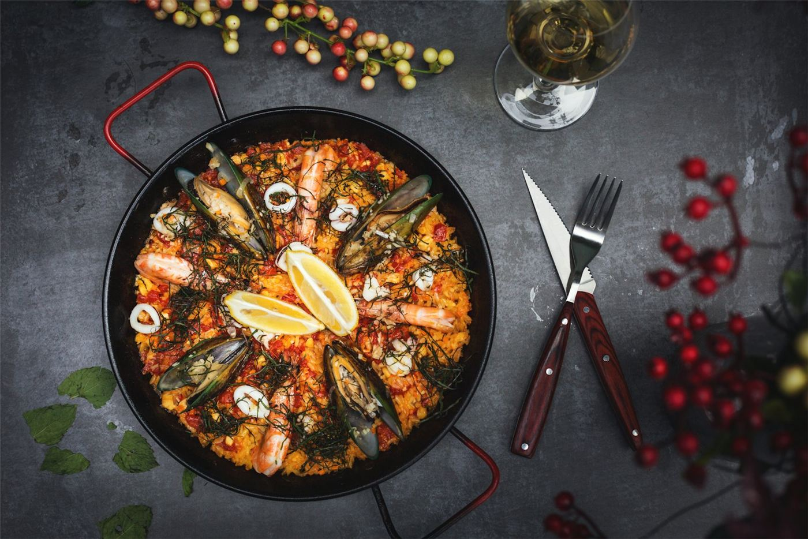
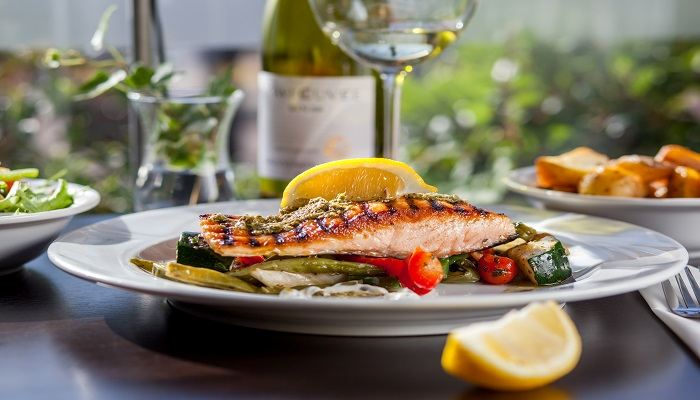
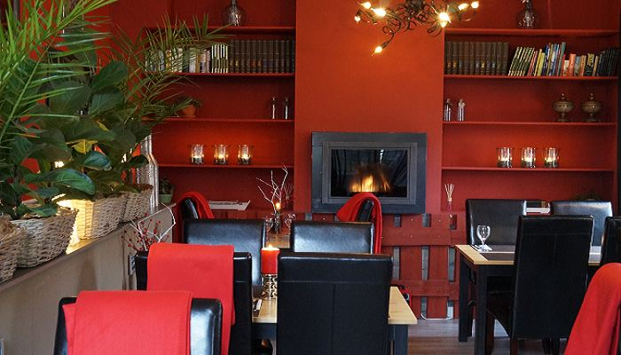
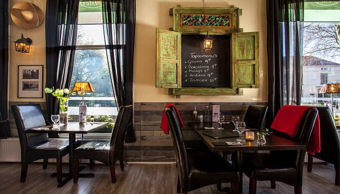
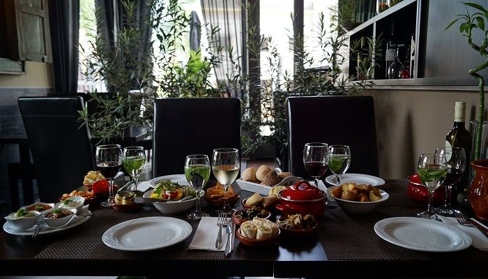
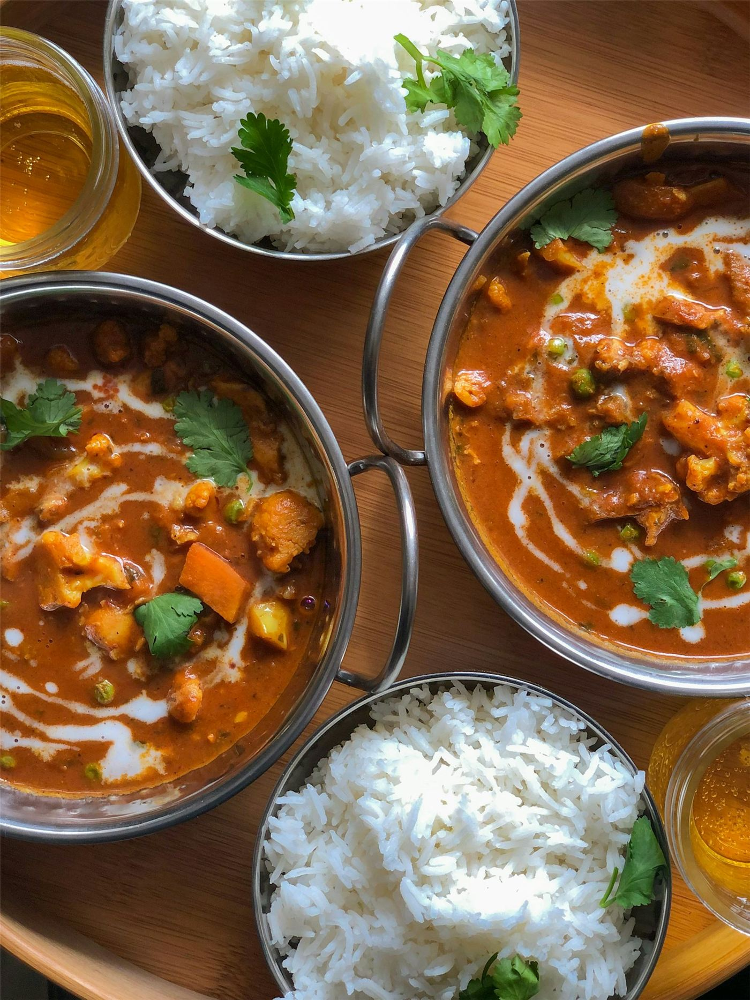
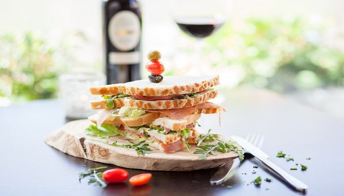

Andora
Vegetarisch
Zes verschillende vegetarische tapas naar keuze.
27,50 p.p.
Vanaf dinsdag 17 november weer open
Koffie, lunch en diner aan de Laarstraat. Wereldse gerechten en tapas, vers en à la minute bereid, met onze eigen Aster-twist.


Beste gasten,
De verbouwing is zo goed als klaar, vanaf dinsdag 17 november kunt u weer bij ons terecht voor koffie, lunch en diner. We serveren een mooi aanbod van wereldse gerechten, van vers en gezond comfortfood tot authentieke gerechten met onze eigen Aster-twist. We kijken ernaar uit u straks weer te zien!
Hartelijke groet,
Khaja Sikkema
Restaurant Aster
Wij bereiden met zorg en aandacht de gerechten à la minute, waarbij we voornamelijk met verse ingrediënten en kruiden werken. Onze wereldgerechten, tapas en sauzen zijn huisgemaakt zonder toevoegingen.
Vertrouwd én verrassend: van een klassieke uitsmijter tot een werelds geïnspireerde lunch. Bij Aster geniet je van royale porties en zorgvuldige bereiding.


Lunch, diner, tapas en desserts. Vlees, vis en veel vegetarisch; veganistische bereiding is bij diverse gerechten op verzoek mogelijk. Prijzen in euro.
Alle 24 lunchgerechten zijn dagelijks verkrijgbaar. Royale porties met vlees, vis en meerdere vegetarische gerechten.
Warm, huisgemaakt en vol smaak
Vertrouwd en royaal geserveerd
Rijk belegd en vers bereid
Met friet en een frisse salade
Van de Middellandse Zee tot India
Fris, rijk gevuld en met brood
Wereldse smaken voor een sfeervolle avond. Bij elk hoofdgerecht staat waar het vandaan komt.
Wereldse vegetarische specialiteiten
Van India tot Mexico en Texas
Van mediterrane paella tot zalmfilet
Vers bereid, met aandacht voor smaak. Vraag naar onze vegetarische en veganistische mogelijkheden en de allergeneninformatie. Andere dieetwensen? Vraag naar de mogelijkheden.

25 wereldse tapas: 10 vegetarisch, 10 vlees en 5 vis. Kies een tapasmenu van zes tapas vanaf 27,50 p.p., of eet twee uur lang onbeperkt van de hele selectie voor 45,00 p.p.
Naar de tapasmenu's en alle 25 tapasDe zoete kroon op uw maaltijd





Kleine gerechten, grote smaken: 25 wereldse tapas om te delen. Kies een tapasmenu of ga voor onbeperkt.
Vegetarisch
Zes verschillende vegetarische tapas naar keuze.
27,50 p.p.
Vlees
Zes verschillende vleestapas.
30,00 p.p.
Mix trio
Twee vegetarische, twee vlees- en twee vistapas.
28,50 p.p.
Mix duo
Zes tapas: 3 vegetarisch + 3 vis, 3 vegetarisch + 3 vlees, of 3 vis + 3 vlees.
28,50 p.p.
2 uur lang
De volledige selectie van 25 tapas, zo vaak als u wilt.
45,00 p.p.
Bij alle tapasmenu's inbegrepen: patatas bravas, brood met dipjes en een frisse rauwkostsalade. Een formule wordt per tafel gekozen. Dranken en desserts apart.
Puur, verrassend en vol karakter
Voor onze vegetarische gerechten gebruiken we vegetarisch geschikte kaas en pesto.
Sappig, kruidig en heerlijk om te delen
Fris, smaakvol en subtiel gekruid

Vragen over allergenen of dieetwensen? Laat het ons gerust weten. Tapaskaart als PDF

Liever thuis genieten? Wij zijn geopend voor afhaal van dinsdag t/m zaterdag, 17.00 tot 20.00 uur.
Geef uw bestelling graag vooraf telefonisch door. Kies uit de gerechten op onze kaart.
Bestel: 06 134 168 50Wij leveren catering van borrelhapjes tot compleet buffet: diverse buffetten en zelf samen te stellen borrel-tapas.
Ook iets te vieren? Voor een sfeervol diner, een bijzondere gelegenheid of een avond met familie, vrienden en collega's. We denken graag mee over een passend aanbod, ook met vegetarische en veganistische wensen.
Op zondag en maandag zijn we gesloten, behalve voor catering of groepen na reservering.
Neem vrijblijvend contact op of loop even binnen.


Wij zijn altijd geïnteresseerd in goed en gemotiveerd personeel voor diverse functies. Wij verwachten van ons personeel dat ze gemotiveerd, representatief, spontaan en flexibel zijn en teamspirit hebben.
Beschik je over deze eigenschappen en wil je een leuke, zelfstandige en uitdagende baan? Stuur een open sollicitatie met cv naar info@restaurantaster.nl.
Zondag en maandag open voor catering of groepen na reservering. In verband met tekort aan personeel kunnen de openingstijden afwijken. Onze excuses voor het ongemak.
Restaurant Aster